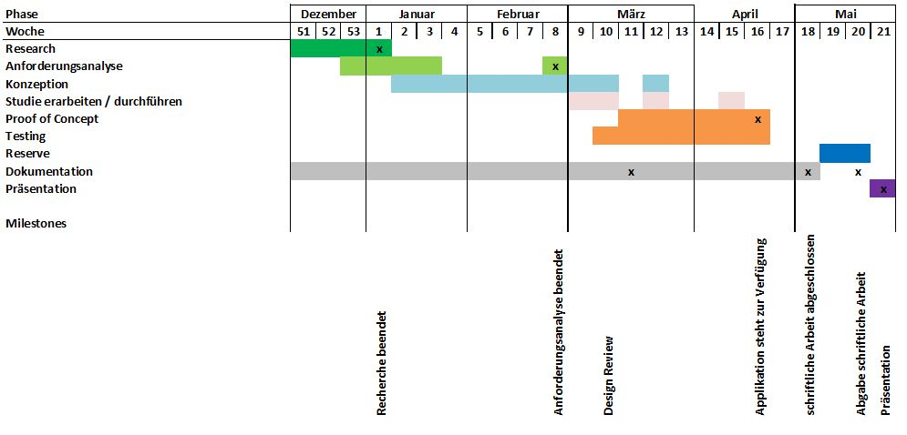

Keine gefältschten Umfragen, Abstimmungen oder Gewinnspiele
Einfache Implemenation / Konfiguration von Authentifizierung
Einfache und schnelle Anwendung von Authentifizierung
Ziele
Konzept einer Authentifzierungsschnittstelle
Akzeptanzstudie zu den verschiedenen Sicherheitsstufen
Prototyp der Authentifzierungsschnittstelle
Aufgabenstellung
Recherche
bestehender Produkte
Sicherheits- und Identitätsüberprüfung
Anforderungsanalyse
Konzept
Evaluation Authentifizierungsmethodenn
Spezifikation einer Prototypenapplikation
Erstellen einer Software-Architektur
Ausarbeiten einer Studie
Aufgabenstellung
Studie
Durchführen der ausgearbeiteten Studie
Auswertung der Studie
Proof of Concept
Entwicklung eines Prototypen
Integration der Studienresultate im Prototypen
Fazit
Erwartete Ergebnisse
Dokumentation
Prototype
Grobplanung

Diskusion
Beantwortung der Fragen gemäss Reglement
1. Steht die Auftraggeberin bzw. der Auftraggeber hinter dieser Bachelorarbeit?
2. Sind die fachliche Kompetenz und die Verfügbarkeit der Betreuungsperson sicher gestellt?
3. Sind die Urheberrechte und Publikationsrechte (u. a. auch die Ablage in der Präsenzbibliothek des Studiengangs
Informatik) geklärt?
4. Bekommt die Studentin oder der Student die notwendige logistische und beratende Unterstützung durch die
Auftraggeberin bzw. den Auftraggeber?
5. Entsprechen das Thema und die Aufgabenstellungen den Anforderungen an eine Bachelorarbeit?
6. Ist die Arbeit thematisch klar abgegrenzt und terminlich entkoppelt von den Prozessen (des Unternehmens) der
Auftraggeberin bzw. des Auftraggebers?
7. Ist eine Grobplanung vorhanden? Sind die nächsten Schritte klar formuliert (von der Studentin oder dem Studenten)?
8. Ist die Arbeit technisch und terminlich von der Studentin oder dem Studenten umsetzbar?
Vielen Dank
github.com/coffeefan/bachelorarbeit
Die Präsentation kann als PDF exportiert werden. Druckansicht